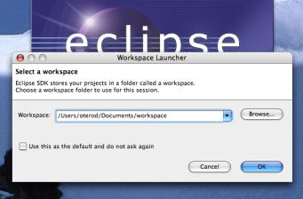
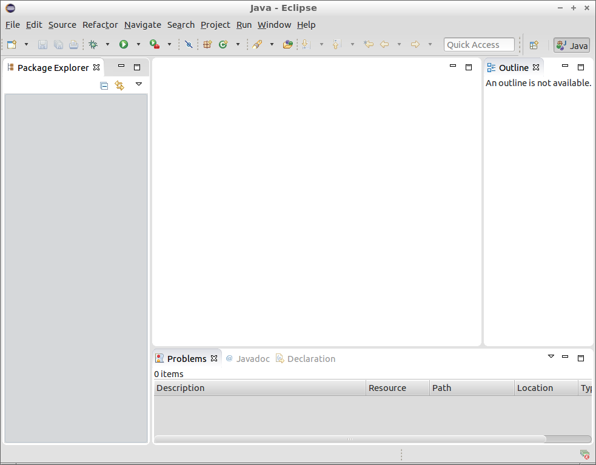
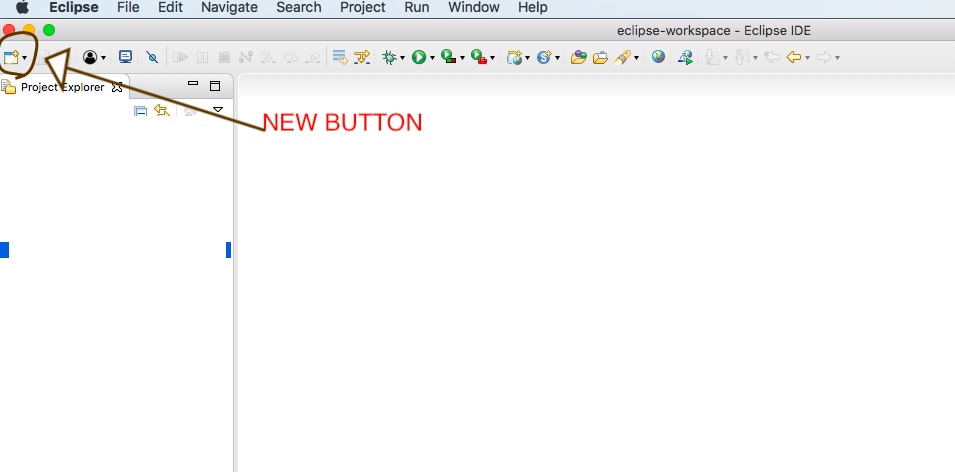

TestNG Class using Eclipse
Create a Java Project in Eclipse ==>
Create a package ==> Right Click on Package ==> TestNG ==> Create TestNG Class
Give Class name , check the check boxes for @BeforeClass and @AfterClass
Click on Finish button.
Now TestNG project is Created. Place cursor on org.testng error and click on ‘Add TestNG library’.
Now place @Test method in between @BeforeClass and @AfterClass , as shown in below.

Now making @BeforeClass to launch my application to test. @Test to test one scenario and @AfterClass to quit my browser.
Changing @Test method name to testMyApplication.
Below code will launch ‘https://www.wikipedia.org/’ , validate Wikipedia logo and close the Browser.

package TestNGPKG;
import org.testng.annotations.*;
import org.openqa.selenium.*;
import org.openqa.selenium.chrome.*;
import java.util.concurrent.TimeUnit;
public class testNGClass {
WebDriver driver;
@BeforeClass
public void beforeClass()
{
System. setProperty("webdriver.chrome.driver", "/Users/mychromedriverpath/Downloads/chromedriver2");
driver = new ChromeDriver();
driver.manage().window().maximize();
driver.get("https://www.wikipedia.org/");
driver.manage().timeouts().pageLoadTimeout(40, TimeUnit.SECONDS);
}
@Test
public void testMyApplication()
{
// To validate 'wikipedia' Logo
if(driver.findElement(By.xpath("//div[@class='central-textlogo__image sprite svg-Wikipedia_wordmark']")).isDisplayed())
{System.out.println("Wikipedia Logo is available");}
}
@AfterClass
public void afterClass()
{
driver.quit(); // To Close the Application....
}
}
Create Maven Project Using TestNG Eclipse
1. Install TestNG in Eclipse from Help --> Eclipse Marketplace ,
Which is already explained in previous section.
2. Open Eclipse , Select any eclipse project path. Check below image.

3. It should navigate to Eclipse landing screen. If you see 'Workbench' image then
click on it.
4. We should see below screen.


5. Select new button from left top section as shown in below image.

6. Select Maven project. Click next button
7. Select create a simple project checkbox and click next.

8. Fill Group id and Artifact Id , it can be same. Here we are giving as
"com.testautomation.mavenprojects"
. Click on Finish button.
9. Once Maven Project is created then wait for sometime to auto build the project.
Once project is build then we can see pom.xml file created inside the project.

10. Once Maven Project is created then wait for sometime to auto build the project.
Once project is build then we can see pom.xml file created inside the project.
11. Right Click on src/text/java --> new --> Package. Create a new TestNG class inside the package.
12. Once TestNG class is created then import TestNG library by hovering your mouse on
class level any error. Check below images.
Create TestNG Class in IntelliJ
2.Create a maven project in IntelliJ
3.Add testNG dependency in POM.XML
4.Create a package under java folder [src/test/java]
5.Create a class file under package
6.Now create test methods using TestNG annotations and import the packages.
Create TestNG XML in IntelliJ
2.Create a maven project in IntelliJ
3.Add testNG dependency in POM.XML
4.Create a XML file under resources folder [src/main/resources]
5.Give XML file name as anyname.xml
6.Paste below code once xml file is created.
<!DOCTYPE suite SYSTEM "https://testng.org/testng-1.0.dtd" >
<suite name="Suite1" verbose="1" >
<test name="manual2Automation" >
<classes>
<class name="TestNGPKG.testNGnew" />
</classes>
</test>
</suite>
TestNGPKG = Package name under [src/test/java]
testNGnew = Class name under TestNGPKG
Now Right click on XML file and run it. This will execute all test present in the xml file.